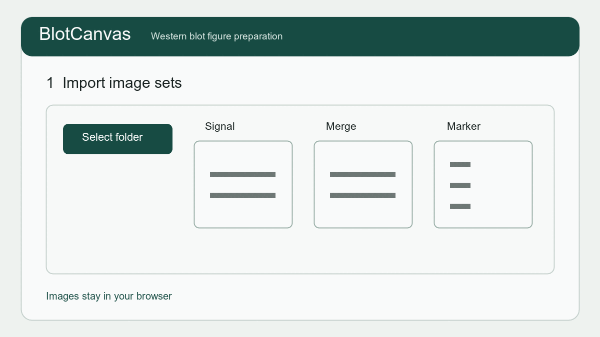

作業前の準備
- 元画像を別の場所にも保存します。
- 最新版ChromeまたはEdgeを推奨します。
- 途中でプロジェクトJSONを保存します。
- Figure用表示調整と定量処理は区別されています。
開発とフィードバックについて
BlotCanvasは、OpenAI Codexを開発支援に使用して作成・改善しています。Googleフォームへ寄せられた不具合・改善報告は開発者が確認し、必要に応じてCodexへ読み込ませ、問題の整理、原因調査、修正案の作成に利用します。
報告内容が自動的に実装されるわけではありません。実装の必要性、科学的妥当性、優先順位、既存機能への影響を開発者が判断した上で改善します。
フォームには、Western blotの元画像、未公開データ、個人情報、患者情報、その他の機密情報を入力・添付しないでください。
1. 撮影ファイルを読み込む
撮影装置を選び、フォルダまたは画像を読み込みます。ATTO LuminoGraphではファイル名から自動分類し、ほかの装置では画像の役割を手動指定します。不要な撮影セットは一覧から除外できます。
装置がMergeを作らない場合は、シグナル画像と明視野／マーカー画像を指定して作業用Mergeを生成できます。画素寸法が一致する画像だけを重ね、元画像と定量用画像は変更しません。
2. 水平を補正する
ゲルごとにマーカーバンド付近へ水平線を置き、線を見ながら角度を調整します。複数ゲル・複数撮影では、それぞれ確認します。
3. 切り出す領域を指定する
四隅で大きさ、中央で位置を調整します。同じFigureに並べる画像では横幅または高さを同期できます。同一画像中のLoading controlも別領域として指定します。
4. Figure用の表示を調整する
白黒反転、明るさ、コントラストを調整します。同じ抗体を比較する画像には同じ設定を適用し、元画像と処理記録を保管してください。
この調整は表示用です。定量値は調整前の元画像から計算されます。
5. 分子量マーカーを指定する
マーカー製品と表示する分子量を選択し、全体画像上で上から順に位置をクリックします。ゲルが複数ある場合はゲルごとに確認します。
6. レーン条件を作る
レーン数と条件形式を選びます。条件行は上下に並べ替えでき、別のゲルへコピーできます。
| 上位条件 | Control | Control | Drug | Drug | Control | Control | Drug | Drug |
|---|---|---|---|---|---|---|---|---|
| 下位条件 | − | ＋ | − | ＋ | − | ＋ | − | ＋ |
Figure Previewを見ながらラベル、抗体名、位置、フォントを調整します。
7. Figureを確認して保存する
- 編集可能PDF：Illustratorで文字・線・枠を編集。後で論文Figureへ配置する幅（25.5、39、54 mm）を選択できます
- PNG / TIFF / JPEG / PDF：完成イメージを1ファイルで保存
- Source record：元画像と切り出し位置を記録
- プロジェクトJSON：後日作業を再開
Illustratorでの編集には、互換性の安定した編集可能PDFを優先してください。
8. 簡易定量を行う
各レーンの矩形ROIをバンドへ合わせ、バンドのない場所に背景ROIを置きます。Loading controlで正規化する場合は同じゲルに対応するブロットを選びます。
注意：現在は矩形ROIによるベータ機能です。論文等へ使用する前に、同一画像・同一ROIでImageJなどの既存手法と照合してください。
9. グラフと結果を保存する
条件表から横軸を作り、色、フォント、サイズ、タイトルを調整します。現在のグラフだけでなく、同じ抗体のGel 1・Gel 2をゲル名付きで縦に並べた1枚のPNGとして一括保存できます。編集可能PDFと背景透過のグラフPNGは、後で論文Figureへ配置する幅（25.5、39、54 mm）を選んで出力できます。測定結果CSVも保存できます。統計処理と独立反復の集約は現在の対象外です。
作業を再開する
画面上部の「開く」からプロジェクトJSONを選びます。画像自体はJSONに含まれないため、必要に応じて元画像を再指定してください。
困ったとき
画面上部の「不具合・改善を報告」から再現手順を送れます。患者情報、未公開画像、実験固有の条件名など、不要な機密情報は送信しないでください。